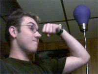

Joined club Fall 2005 and voted/promoted to extended exec Lieutenant within a week. Coincidence? I think not.
Rank: Lieutenant
Background |
|
Crew Evaluation:
Lt. Kyle is an unfortunate wanderer of space and time. Hailing originally from 20th Century Earth, he was assimilated at the age of 21 by the Borg collective. Lucky for him, a major time paradox occurred when the infamous Captain Janeway travelled back in time to destroy their cube; Kyle had not undergone a complete assimilation and had his cybernetic components forcibly removed by Starfleet medical officers so that he could remain human and live. You can check out the scar on his left eyebrow if you dig that sort of thing. He claims to have earned it in battle with a fierce Klingon warrior. Because of his incredibly useful degree in Developmental Art and his seeming unimportance in the grand scheme of 20th century history, Kyle decided to pollute the timeline by remaining in his future and joined Starfleet to become an Educator of historic pop culture and fine art. Instead he somehow wound up in the Universitas Albertus system serving aboard the USS Irregardless, and recently transferred to his current post as the talented pilot of the USS Blunt. Let us pray earnestly that he doesn't crash the ship into an incorrectly-labelled planet or large moon.
|